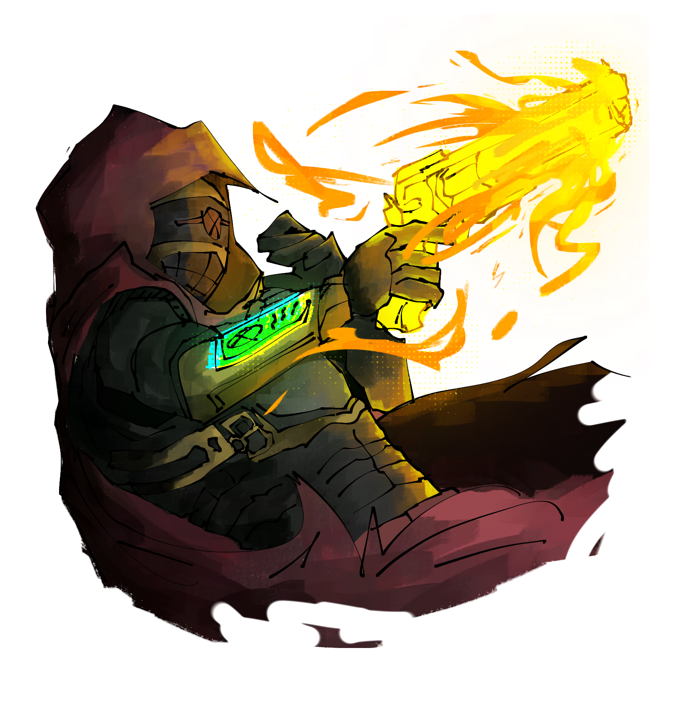

<!-- BACKUP DA CLASSE PISTOLEIRO - v1.4.8 - 22/08/2026 -->
<!-- Este arquivo é um backup da classe Pistoleiro antes de alterações -->
<!-- Para restaurar, copie este conteúdo de volta para classes.html -->

<section class="subsection" id="pistoleiro">
        <div class="race-card" style="max-width: 900px; margin: 0 auto;">
          <div class="race-card-image">
            
          </div>
          <div class="race-card-header">
            <div>
              <h2 class="race-name">Pistoleiro</h2>
            </div>
            <div class="difficulty-badge difficulty-3"><small>ND</small>3</div>
          </div>
          <div class="race-card-body">

            <p class="race-description">Entre a pólvora e o éter, existe o Pistoleiro — aquele que transforma chumbo em Energia Astral e dispara encantamentos com a mesma precisão que balas.</p>
            <p class="race-description">O Pistoleiro é um atirador astral, um combatente que une a arte da mira com os mistérios dos cosmos. Em seu coldre repousa mais que metal e pólvora — cada bala pode carregar um feitiço, cada disparo pode distorcer a realidade. Ele não precisa escolher entre ação ou magia, pois dominou ambos.</p>
            <p class="race-description">Treinados tanto em salões de tiro quanto em pequenas comunidades que cultuam os Deuses, os Pistoleiros são versáteis no campo de batalha: podem explodir inimigos à distância com tiros encantados, manipular o campo de batalha com munições elementais ou até conjurar proteção mágica enquanto recarregam. Seu estilo de combate é elegante e letal, como uma dança entre a ciência e o sobrenatural.</p>
            <p class="race-description">Enquanto seguidores entoam palavras, o Pistoleiro faz ambos ao mesmo tempo — e raramente erra.</p>

            <h4>Características da Classe</h4>

            <div class="class-stat-grid">
              <div class="class-stat"><div class="class-stat-label">Vida (1º Nível)</div><div class="class-stat-value">8 + <span class="attr-saude">Saúde</span></div></div>
              <div class="class-stat"><div class="class-stat-label">Vida por Nível</div><div class="class-stat-value">8 + <span class="attr-saude">Saúde</span></div></div>
            </div>

            <div class="class-prog">
              <div class="class-prog-label" style="margin-bottom: var(--space-sm);">Energia Astral por Nível</div>
              <div class="class-prog-row"><span class="class-prog-label">Níveis 1-5</span> <span>160</span></div>
              <div class="class-prog-row"><span class="class-prog-label">Níveis 6-11</span> <span>360</span></div>
              <div class="class-prog-row"><span class="class-prog-label">Níveis 12-16</span> <span>620</span></div>
              <div class="class-prog-row"><span class="class-prog-label">Níveis 17-18</span> <span>760</span></div>
              <div class="class-prog-row"><span class="class-prog-label">Níveis 19-20</span> <span>1100</span></div>
            </div>

            <h4>Proficiências</h4>
            <div class="class-stat-grid">
              <div class="class-stat"><div class="class-stat-label">Armas</div><div class="class-stat-value">Revólveres, Pistolas e armas de fogo semiautomáticas (bônus de proficiência aumentado em + metade do bônus arredondado para baixo)</div></div>
              <div class="class-stat"><div class="class-stat-label">Armaduras</div><div class="class-stat-value">Armaduras leves</div></div>
              <div class="class-stat"><div class="class-stat-label">Ferramentas</div><div class="class-stat-value">Kit de Armeiro</div></div>
              <div class="class-stat"><div class="class-stat-label">Escudos</div><div class="class-stat-value">Nenhum</div></div>
              <div class="class-stat"><div class="class-stat-label">Testes de Resistência</div><div class="class-stat-value"><span class="attr-des">Destreza</span>, <span class="attr-int">Inteligência</span></div></div>
            </div>

            <h4>Bônus de Proficiência</h4>
            <div class="class-prog">
              <div class="class-prog-row"><span class="class-prog-label">Níveis 1-4</span> <span>+2</span></div>
              <div class="class-prog-row"><span class="class-prog-label">Níveis 5-8</span> <span>+3</span></div>
              <div class="class-prog-row"><span class="class-prog-label">Níveis 9-12</span> <span>+4</span></div>
              <div class="class-prog-row"><span class="class-prog-label">Níveis 13-16</span> <span>+5</span></div>
              <div class="class-prog-row"><span class="class-prog-label">Níveis 17-20</span> <span>+6</span></div>
            </div>

            <h4>Equipamentos Iniciais</h4>
            <div class="class-stat-grid">
              <div class="class-stat"><div class="class-stat-label">Arma</div><div class="class-stat-value">Revólver Adulterado — começa causando <span class="dice">3d6</span> ao invés de <span class="dice">2d6</span></div></div>
              <div class="class-stat"><div class="class-stat-label">Armadura</div><div class="class-stat-value">Armadura leve (couro leve ou equivalente)</div></div>
              <div class="class-stat"><div class="class-stat-label">Ferramentas</div><div class="class-stat-value">Kit de Armeiro</div></div>
              <div class="class-stat"><div class="class-stat-label">Pacote de Aventuras</div><div class="class-stat-value">Mochila do Viajante (rações 5 usos, cantil, 3m de corda)</div></div>
            </div>

            <h4>Mecânica — O Número do Azar!</h4>
            <p style="font-size: 0.9rem; color: var(--text-secondary); margin-bottom: var(--space-lg);">Ao acertar 3 tiros consecutivos em determinado alvo, o Pistoleiro pode guardar mais energia para o quarto. Nesse estágio, o próximo tiro do Pistoleiro será crítico com relação ao alvo, dobrando seu dano e ignorando as resistências do alvo, o fazendo receber o dano inteiro de seu disparo. Após fazer o uso dessa mecânica e acertar o disparo, o Pistoleiro recupera 25% de sua Energia Astral.</p>
            <div class="class-carga">
              <h5>Exemplo</h5>
              <p>Ao acertar o 4º tiro com seu revólver, o Pistoleiro causa o dobro de dano, ou seja <span class="dice">3d6</span> ×2 e recupera 25% da Energia Astral. No nível 1, recuperaria (160 ÷ 4 = 40) de Energia Astral.</p>
            </div>

            <div class="callout callout-warning" style="margin-bottom: var(--space-lg);">
              <p><strong>ATENÇÃO:</strong> As habilidades desta classe só podem ser utilizadas com armas à distância não automáticas.</p>
            </div>

            <h4>Habilidades de Classe</h4>
            <p style="font-size: 0.9rem; color: var(--text-secondary); margin-bottom: var(--space-lg);">No 3º nível, o Pistoleiro deve escolher uma <strong>Trilha</strong> (arquétipo), que define seu estilo de tiro. Nos níveis 9 e 15, há escolhas adicionais entre duas opções.</p>

            <!-- Nível 1 -->
            <div class="race-ability">
              <div class="ability-level">Nível 1</div>
              <div style="background: rgba(0,0,0,0.2); border-radius: var(--radius-sm); padding: var(--space-md);">
                <h5>Tambor Relâmpago</h5>
                <p>O Pistoleiro pode gastar Energia Astral para aumentar ainda mais sua velocidade no gatilho. Consegue dar 1 tiro a mais no turno, desde que tenha munição. A habilidade escala: 5º nível: 3 tiros na rodada, 10º: 4 tiros, 15º: 5 tiros, 18º: 6 tiros. <span class="ability-tag">Ação Livre</span> <span class="ability-cost">-10 de Energia Astral por tiro</span></p>
              </div>
            </div>

            <!-- Nível 2 -->
            <div class="race-ability">
              <div class="ability-level">Nível 2</div>
              <div style="background: rgba(0,0,0,0.2); border-radius: var(--radius-sm); padding: var(--space-md);">
                <h5>Chumbo Astral</h5>
                <p>O Pistoleiro pode revestir com uma ação bônus seu revólver com sua Energia Astral, aumentando temporariamente o dano dos disparos. O dano é equivalente ao bônus que ele recebe para atirar: no nível 1 seria +<span class="dice">3d8</span>, no nível 5 +<span class="dice">4d8</span>, e assim sucessivamente. Ele apenas encanta o tambor ou cartucho que está usando, com a quantidade de balas que tem na arma. <span class="ability-tag">Ação Bônus</span> <span class="ability-cost">-60 de Energia Astral</span></p>
              </div>
            </div>

            <!-- Nível 3 -->
            <div class="race-ability">
              <div class="ability-level">Nível 3 — Escolha sua Trilha</div>
              <p style="font-size: 0.85rem; color: var(--text-muted); margin-bottom: var(--space-md);">Ganha as duas habilidades abaixo + escolha uma trilha entre Regressor, Solar ou Gatilho Mortal:</p>
              <div style="background: rgba(0,0,0,0.2); border-radius: var(--radius-sm); padding: var(--space-md); margin-bottom: var(--space-sm);">
                <h5>Recarga Rápida</h5>
                <p>O Pistoleiro consegue recarregar suas armas com uma reação durante a rodada, porém só pode fazer isso uma vez por rodada. Caso não recarregue e não possua mais essa ação, deve gastar sua ação bônus. <span class="ability-tag">Passiva</span></p>
              </div>
              <div style="background: rgba(0,0,0,0.2); border-radius: var(--radius-sm); padding: var(--space-md);">
                <h5>Atirador Nato</h5>
                <p>O Pistoleiro pode gastar sua ação bônus para fazer a ação de mirar com sua arma, recebendo vantagem em seu teste de acerto e aumentando em um dado o dano de sua arma. <span class="ability-tag">Passiva</span></p>
              </div>
            </div>

            <!-- Nível 6 -->
            <div class="race-ability">
              <div class="ability-level">Nível 6</div>
              <div style="background: rgba(0,0,0,0.2); border-radius: var(--radius-sm); padding: var(--space-md);">
                <h5>Alvo do Caçador de Cabeças</h5>
                <p>Após acertar um alvo, o Pistoleiro pode colocar uma marca de alvo nele. Por 2 rodadas, sabe onde o alvo está e possui bônus igual à metade da proficiência (arredondado para cima) para acertá-lo. <span class="ability-tag">Ação Bônus</span> <span class="ability-cost">-160 de Energia Astral</span></p>
              </div>
            </div>

            <!-- Nível 8 -->
            <div class="race-ability">
              <div class="ability-level">Nível 8</div>
              <div style="background: rgba(0,0,0,0.2); border-radius: var(--radius-sm); padding: var(--space-md);">
                <h5>Disparo Teleguiado</h5>
                <p>O Pistoleiro transforma balas em munição teleguiada que segue o alvo por 2 rodadas até acertar ou errar. Se errar, o alvo deve rolar desvio do ataque novamente nos turnos seguintes. <span class="ability-tag">Ação Bônus</span> <span class="ability-cost">-25 de Energia Astral por bala</span></p>
              </div>
            </div>

            <!-- Nível 9 -->
            <div class="race-ability">
              <div class="ability-level">Nível 9 — Escolha uma das habilidades abaixo</div>
              <div style="background: rgba(0,0,0,0.2); border-radius: var(--radius-sm); padding: var(--space-md); margin-bottom: var(--space-sm);">
                <h5>Dead Eye</h5>
                <p>Quando o Pistoleiro estiver com 50% ou menos de sua vida, seus disparos ficam mais precisos: diminui a margem de crítico de suas armas em 2 (se o crítico era 20, passa a ser 18). Além disso, pode recarregar instantaneamente seu revólver no começo do turno sem gastar ação. <span class="ability-tag">Passiva</span></p>
              </div>
              <div style="background: rgba(0,0,0,0.2); border-radius: var(--radius-sm); padding: var(--space-md);">
                <h5>Gatilho Fantasma</h5>
                <p>Após esquivar de um ataque do oponente, o Pistoleiro ganha um disparo fantasma que pode efetuar contra o alvo. Não exige munição e causa o dano do tiro do revólver + <span class="dice">2d12</span>. Disparos são cumulativos com limite igual ao bônus de proficiência. <span class="ability-tag">Passiva</span></p>
              </div>
            </div>

            <!-- Nível 12 -->
            <div class="race-ability">
              <div class="ability-level">Nível 12</div>
              <div style="background: rgba(0,0,0,0.2); border-radius: var(--radius-sm); padding: var(--space-md);">
                <h5>Disparo Ilusório</h5>
                <p>O Pistoleiro pode gastar sua ação bônus para efetuar um disparo ilusório. O oponente deve realizar um teste de <span class="attr-int">Inteligência</span> (CD 10 + proficiência + <span class="attr-des">DES</span>). Caso falhe, tem desvantagem nos testes relacionados a reação aos ataques do Pistoleiro. <span class="ability-tag">Ação Bônus</span> <span class="ability-cost">-60 de Energia Astral</span></p>
              </div>
            </div>

            <!-- Nível 15 -->
            <div class="race-ability">
              <div class="ability-level">Nível 15 — Escolha uma das habilidades abaixo</div>
              <div style="background: rgba(0,0,0,0.2); border-radius: var(--radius-sm); padding: var(--space-md); margin-bottom: var(--space-sm);">
                <h5>Duelista Natural</h5>
                <p>Sempre que vencer contra um teste do oponente (acerto vs esquiva, resistência, etc), o Pistoleiro acumula <span class="dice">1d12</span> de dano igual ao número de proficiência, aumentando seu dano durante a luta ao explorar fraquezas. <span class="ability-tag">Passiva</span></p>
              </div>
              <div style="background: rgba(0,0,0,0.2); border-radius: var(--radius-sm); padding: var(--space-md);">
                <h5>Olho de Gavião</h5>
                <p>O Pistoleiro aumenta seu dano crítico em +1×. Ex: se a arma tem crítico ×2, passa a ser ×3. <span class="ability-tag">Passiva</span></p>
              </div>
            </div>

            <!-- Nível 18 -->
            <div class="race-ability">
              <div class="ability-level">Nível 18</div>
              <div style="background: rgba(0,0,0,0.2); border-radius: var(--radius-sm); padding: var(--space-md);">
                <h5>Malandro Arcano</h5>
                <p>O Pistoleiro adiciona aos seus disparos condições simples do universo (sangramento, atordoamento etc). O alvo deve fazer um teste de <span class="attr-rf">RF</span> ou <span class="attr-re">RM</span> (CD 10 + <span class="attr-int">INT</span> + <span class="attr-des">DES</span>). Caso falhe, está submetido à condição. Condições cumulativas como sangramento podem ser aplicadas sucessivamente. <span class="ability-tag">Ação Padrão</span> <span class="ability-cost">-200 de Energia Astral</span></p>
              </div>
            </div>

            <!-- Nível 20 -->
            <div class="race-ability">
              <div class="ability-level">Nível 20</div>
              <div style="background: rgba(0,0,0,0.2); border-radius: var(--radius-sm); padding: var(--space-md);">
                <h5>Apocalipse</h5>
                <p>O Pistoleiro concentra-se por um instante, gastando toda a sua ação no turno. Garante que 6 balas irão acertar o alvo, rolando apenas para saber se terão dano crítico. As balas causam <span class="dice">6d15</span> adicional associado à Energia Astral do Pistoleiro e, se quiser, ao dano da trilha escolhida. O 4º acerto não é crítico com esta habilidade. <span class="ability-tag">Ação Padrão</span> <span class="ability-cost">-650 de Energia Astral</span></p>
              </div>
            </div>

            <h4>Trilhas do Pistoleiro</h4>
            <p style="font-size: 0.9rem; color: var(--text-secondary); margin-bottom: var(--space-lg);">No 3º nível, o Pistoleiro decide que rumo tomar com relação ao seu modo de atirar. A Trilha reflete a personalidade e o caminho que o Pistoleiro vai decidir trilhar — e, por fim, o Estilo!</p>

            <!-- TRILHA REGRESSOR -->
            <div class="race-card" style="max-width: 100%; border-color: rgba(0, 180, 255, 0.4); margin-bottom: var(--space-xl);">
              <div class="race-card-header"><h3 class="race-name" style="font-size: 1.3rem;">Pistoleiro Regressor</h3></div>
              <div class="race-card-body">
                <p class="race-description">"Congelo o caos com propósito. A bala não mata — ela estabiliza."</p>
                <p class="race-description">O Pistoleiro Regressor é um manipulador da <strong>Estase</strong>, capaz de canalizar fragmentos do Supremo Criador através de seu tambor. Suas balas congelam a realidade no momento perfeito, interrompendo desequilíbrios e estabilizando tudo ao redor, inclusive o fluxo de ações.</p>

                <h4>Dano Base da Estase — "Congelamento Cósmico [CC]"</h4>
                <div class="class-prog">
                  <div class="class-prog-row"><span class="class-prog-label">Níveis 1-7</span> <span><span class="dice">3d8</span></span></div>
                  <div class="class-prog-row"><span class="class-prog-label">Níveis 8-10</span> <span><span class="dice">4d8</span></span></div>
                  <div class="class-prog-row"><span class="class-prog-label">Níveis 11-16</span> <span><span class="dice">4d10</span></span></div>
                  <div class="class-prog-row"><span class="class-prog-label">Níveis 17-18</span> <span><span class="dice">4d12</span></span></div>
                  <div class="class-prog-row"><span class="class-prog-label">Níveis 19-20</span> <span><span class="dice">4d15</span></span></div>
                </div>

                <div class="class-rank"><h5>Fragmentos Estáticos</h5>
                <p>O Pistoleiro Regressor molda balas de Estase cristalizada que fixam o movimento no instante do disparo. Sempre que atingir um inimigo com pistola ou revólver, o alvo recebe +2 acúmulo de <strong>Congelado</strong> (máx. 10). Ao atingir 10 acúmulos, entra no estado <strong>Congelado</strong> por 2 turnos, e os acúmulos são zerados. Multiplicadores de crítico somam: com arma ×2 em crítico, seriam 2 + 2 de acúmulo.</p></div>

                <div class="race-ability"><div class="ability-level">Nível 3 — Escolha uma:</div>
                  <div style="background: rgba(0,0,0,0.2); border-radius: var(--radius-sm); padding: var(--space-md); margin-bottom: var(--space-sm);">
                    <h5>Balança Quebrada</h5>
                    <p>Após acertar um disparo, você pode atirar de novo rapidamente na mesma ação. O segundo disparo adiciona +1 dado de CC. <span class="ability-tag">Ação Bônus</span> <span class="ability-cost">-40 de Energia Astral</span></p>
                  </div>
                  <div style="background: rgba(0,0,0,0.2); border-radius: var(--radius-sm); padding: var(--space-md);">
                    <h5>Calafrio Persistente</h5>
                    <p>Você dispara um projétil de Estase que se fixa no inimigo e ecoa por 2 turnos. No início de cada turno do alvo, ele sofre <span class="dice">1d6</span> de dano de Estase e sofre Congelado no dano do último projétil. <span class="ability-tag">Ação Bônus</span> <span class="ability-cost">-25 de Energia Astral</span></p>
                  </div>
                </div>

                <div class="race-ability"><div class="ability-level">Nível 4 — Escolha uma:</div>
                  <div style="background: rgba(0,0,0,0.2); border-radius: var(--radius-sm); padding: var(--space-md); margin-bottom: var(--space-sm);">
                    <h5>Gelo Anulador</h5>
                    <p>Dispare uma bala de gelo azul profundo em um alvo. Além do dano normal (CC), ele deve realizar um teste de Resistência Mental (CD 10 + <span class="attr-des">DES</span> + <span class="attr-int">INT</span>). Se falhar, recebe a condição <strong>Congelado</strong>. <span class="ability-tag">Ação Padrão</span> <span class="ability-cost">-35 de Energia Astral</span></p>
                  </div>
                  <div style="background: rgba(0,0,0,0.2); border-radius: var(--radius-sm); padding: var(--space-md);">
                    <h5>Prisão Estática</h5>
                    <p>Dispare em uma área de 3B. Todos os alvos dentro devem passar em um teste de <span class="attr-fr">Força</span> (CD 10 + <span class="attr-des">DES</span> + <span class="attr-int">INT</span>) ou ficam imobilizados por 1 turno. Se falharem por 15 ou menos, recebem <strong>Congelado</strong>. <span class="ability-tag">Ação Padrão</span> <span class="ability-cost">-80 de Energia Astral</span></p>
                  </div>
                </div>

                <div class="race-ability"><div class="ability-level">Nível 8 — Escolha uma:</div>
                  <div style="background: rgba(0,0,0,0.2); border-radius: var(--radius-sm); padding: var(--space-md); margin-bottom: var(--space-sm);">
                    <h5>Ecos da Estase</h5>
                    <p>Sempre que aplicar <strong>Congelado</strong> em um inimigo, um fragmento de gelo se fixa no local (3×3B). Quando um inimigo se mover por essa área, sofre <span class="dice">1d6</span> + dano base de Estase e precisa passar em teste de <span class="attr-des">DES</span> (CD 10 + <span class="attr-des">DES</span> + <span class="attr-int">INT</span>) ou seu movimento é interrompido. <span class="ability-tag">Passiva</span></p>
                  </div>
                  <div style="background: rgba(0,0,0,0.2); border-radius: var(--radius-sm); padding: var(--space-md);">
                    <h5>Tiro Sem Presença</h5>
                    <p>Escolha um inimigo que você viu no turno anterior. Mesmo fora de visão, realize um disparo contra ele com desvantagem. Se acertar, adicione CC×2. <span class="ability-tag">Ação Bônus</span> <span class="ability-cost">-50 de Energia Astral</span></p>
                  </div>
                </div>

                <div class="race-ability"><div class="ability-level">Nível 12 — Escolha uma:</div>
                  <div style="background: rgba(0,0,0,0.2); border-radius: var(--radius-sm); padding: var(--space-md); margin-bottom: var(--space-sm);">
                    <h5>Âncora Fria</h5>
                    <p>Escolha um inimigo que sofreu dano de Estase neste combate. Durante os próximos 2 turnos, toda vez que ele usar movimento, sofre <span class="dice">3d8</span> + dano base de Estase. <span class="ability-tag">Ação Bônus</span> <span class="ability-cost">-75 de Energia Astral</span></p>
                  </div>
                  <div style="background: rgba(0,0,0,0.2); border-radius: var(--radius-sm); padding: var(--space-md);">
                    <h5>Congelamento Contínuo</h5>
                    <p>Inimigos afetados por <strong>Congelado</strong> pela segunda vez no combate sofrem -2 na CD para testes de resistência contra suas habilidades até o fim da luta. <span class="ability-tag">Passiva</span></p>
                  </div>
                </div>

                <div class="race-ability"><div class="ability-level">Nível 15 — Escolha uma:</div>
                  <div style="background: rgba(0,0,0,0.2); border-radius: var(--radius-sm); padding: var(--space-md); margin-bottom: var(--space-sm);">
                    <h5>Gatilho Suspenso</h5>
                    <p>Você "arma" um disparo de Estase que se ativa automaticamente quando o alvo realizar um ataque. Assim que ele declara a ação, a bala acerta. Se atingir, o ataque do alvo é cancelado. 1 uso por ataque. <span class="ability-tag">Reação</span> <span class="ability-cost">-95 de Energia Astral</span></p>
                  </div>
                  <div style="background: rgba(0,0,0,0.2); border-radius: var(--radius-sm); padding: var(--space-md);">
                    <h5>Tempestade Azul Profundo</h5>
                    <p>Dispara uma salva de fragmentos congelantes em área de 6B. Todos os alvos sofrem <span class="dice">3d6</span> + CC de dano de Estase e devem passar em teste de RM (CD 10 + <span class="attr-int">INT</span> + <span class="attr-des">DES</span>) ou ficam <strong>Congelados</strong>. <span class="ability-tag">Ação Padrão</span> <span class="ability-cost">-120 de Energia Astral</span></p>
                  </div>
                </div>

                <div class="race-ability"><div class="ability-level">Nível 20</div>
                  <div style="background: rgba(0,0,0,0.2); border-radius: var(--radius-sm); padding: var(--space-md);">
                    <h5>Tempestade de Estase</h5>
                    <p>O Pistoleiro gira com suas armas e desencadeia uma tempestade congelante de balas espectrais por toda a área. Dispara 36 tiros espectrais (divididos entre inimigos) em 360° cobrindo 5B. A área se torna Zona Congelante por 3 turnos, explodindo a cada rodada ignorando resistências e causando 4 acúmulos de <strong>Congelado</strong> por explosão. Todos os inimigos em 5B fazem teste de RM (CD 16 + <span class="attr-int">INT</span>). Falha: <strong>Congelado Fortalecido</strong> (só sai ao receber 3 ataques). Sucesso: <strong>Congelado</strong>. Cada disparo causa (<span class="attr-des">DES</span> + <span class="attr-int">INT</span>) × 1,75 de dano Estase. <span class="ability-tag">Ação Padrão</span> <span class="ability-cost">-350 de Energia Astral</span></p>
                  </div>
                </div>

              </div>
            </div>

            <!-- TRILHA SOLAR -->
            <div class="race-card" style="max-width: 100%; border-color: rgba(245, 183, 0, 0.4); margin-bottom: var(--space-xl);">
              <div class="race-card-header"><h3 class="race-name" style="font-size: 1.3rem;">Pistoleiro Solar</h3></div>
              <div class="race-card-body">
                <p class="race-description">"O Pistoleiro Solar canaliza o próprio sol em seus disparos. Cada tiro é uma fagulha de aurora, cada explosão, um eclipse em miniatura, um guerreiro que carrega o fogo dos astros nas mãos."</p>

                <h4>Dano Base Solar</h4>
                <div class="class-prog">
                  <div class="class-prog-row"><span class="class-prog-label">Níveis 1-7</span> <span><span class="dice">3d8</span></span></div>
                  <div class="class-prog-row"><span class="class-prog-label">Níveis 8-10</span> <span><span class="dice">4d8</span></span></div>
                  <div class="class-prog-row"><span class="class-prog-label">Níveis 11-16</span> <span><span class="dice">4d10</span></span></div>
                  <div class="class-prog-row"><span class="class-prog-label">Níveis 17-18</span> <span><span class="dice">4d12</span></span></div>
                  <div class="class-prog-row"><span class="class-prog-label">Níveis 19-20</span> <span><span class="dice">4d15</span></span></div>
                </div>

                <div class="class-rank"><h5>Queimadura Solar</h5>
                <p>O Pistoleiro Solar imbuí suas armas com sua vontade escaldante. Seus disparos causam a condição <strong>Queimando</strong>, acumulando um número de vezes igual ao modificador de proficiência. Dura até o inimigo passar em teste de <span class="attr-rf">RF</span> (CD 10 + <span class="attr-des">DES</span> + Proficiência).</p></div>

                <div class="race-ability"><div class="ability-level">Nível 3</div>
                  <div style="background: rgba(0,0,0,0.2); border-radius: var(--radius-sm); padding: var(--space-md);">
                    <h5>Flash Bang!</h5>
                    <p>Cria uma pequena esfera do elemento Solar. Todos os inimigos num raio de 6B devem realizar teste de <span class="attr-rf">RF</span> (CD 10 + <span class="attr-des">DES</span> + Proficiência). Falha: condição <strong>Cego</strong> até a próxima rodada. <span class="ability-tag">Ação Bônus</span> <span class="ability-cost">-50 de Energia Astral</span></p>
                  </div>
                </div>

                <div class="race-ability"><div class="ability-level">Nível 5</div>
                  <p style="font-size: 0.85rem; color: var(--text-muted); margin-bottom: var(--space-md);">Ganha as duas habilidades abaixo:</p>
                  <div style="background: rgba(0,0,0,0.2); border-radius: var(--radius-sm); padding: var(--space-md); margin-bottom: var(--space-sm);">
                    <h5>Espoleta Solar</h5>
                    <p>Aumenta a potência dos disparos com o elemento Solar. Dobra o alcance do revólver e aumenta o dano em dois "passos" e dois dados (ex: <span class="dice">2d6</span> vira <span class="dice">4d10</span>). Pode usar metade do modificador de proficiência em vezes. Passos: d6 → d8 → d10 → d12 → d15 → d20. <span class="ability-tag">Ação Bônus</span> <span class="ability-cost">-60 de Energia Astral</span></p>
                  </div>
                  <div style="background: rgba(0,0,0,0.2); border-radius: var(--radius-sm); padding: var(--space-md);">
                    <h5>Batata Quente</h5>
                    <p>Sempre que errar um disparo, o alvo deve rolar um teste de esquiva adicional no próximo turno relativo à bala errada. O tiro causa metade do dano total + dado de dano do Pistoleiro Solar. <span class="ability-tag">Passiva</span> <span class="ability-cost">-15 de Energia Astral por bala ricocheteada</span></p>
                  </div>
                </div>

                <div class="race-ability"><div class="ability-level">Nível 8</div>
                  <div style="background: rgba(0,0,0,0.2); border-radius: var(--radius-sm); padding: var(--space-md);">
                    <h5>Munição Explosiva</h5>
                    <p>Imbuí balas com elemento Solar. As munições causam dano adicional igual ao dano base da classe em área de 4B e empurram inimigos <span class="dice">1d4</span> metros por explosão. <span class="ability-tag">Ação Bônus</span> <span class="ability-cost">-75 de Energia Astral</span></p>
                  </div>
                </div>

                <div class="race-ability"><div class="ability-level">Nível 13</div>
                  <div style="background: rgba(0,0,0,0.2); border-radius: var(--radius-sm); padding: var(--space-md);">
                    <h5>Chuva de Fogo</h5>
                    <p>Atira 6 balas para cima que se transformam em raios solares em área de 6B. Causam número de dados igual à proficiência do dano base. Inimigos fazem teste de RM (CD 10 + <span class="attr-des">DES</span> + Proficiência) para metade do dano. A área fica iluminada até o fim do combate, impedindo elementos com fraqueza a Solar, ilusões e condições na área. <span class="ability-tag">Ação Bônus</span> <span class="ability-cost">-100 de Energia Astral</span></p>
                  </div>
                </div>

                <div class="race-ability"><div class="ability-level">Nível 15</div>
                  <div style="background: rgba(0,0,0,0.2); border-radius: var(--radius-sm); padding: var(--space-md);">
                    <h5>Coração Ardente</h5>
                    <p>Cede parte de sua vida trocando-a por calor. Sofre <span class="dice">1d10</span> (limitado pela proficiência) para adicionar <span class="dice">1d12</span> (limitado pela proficiência). Disparos ganham propriedade perfurante e incendiam alvos, causando dano base da classe até o alvo apagar. <span class="ability-tag">Ação Bônus</span> <span class="ability-cost">-150 de Energia Astral</span></p>
                  </div>
                </div>

                <div class="race-ability"><div class="ability-level">Nível 17</div>
                  <div style="background: rgba(0,0,0,0.2); border-radius: var(--radius-sm); padding: var(--space-md);">
                    <h5>Marca do Justiceiro</h5>
                    <p>Marca um alvo com o símbolo de Cadamor. Se for uma criatura com ações ruins, um raio solar cai sobre ela no final de seu turno até o fim do combate, causando 4 dados de dano base Solar. Além disso, o Pistoleiro recebe vantagem para acertar o alvo por 2 rodadas. <span class="ability-tag">Ação Bônus</span> <span class="ability-cost">-80 de Energia Astral</span></p>
                  </div>
                </div>

                <div class="race-ability"><div class="ability-level">Nível 20</div>
                  <div style="background: rgba(0,0,0,0.2); border-radius: var(--radius-sm); padding: var(--space-md);">
                    <h5>Sol Invictus!</h5>
                    <p>Invoca o poder absoluto do sol, tornando-se um avatar da luz. Os dois próximos disparos causam dano crítico. Após usar, mesmo sem munição, o Pistoleiro ataca mais duas vezes no turno. Disparos causam cegueira e <strong>Queimando</strong> acumula +2 vezes no alvo (mesmo acima do limite). <span class="ability-tag">Ação Padrão</span> <span class="ability-cost">-500 de Energia Astral</span></p>
                  </div>
                </div>

              </div>
            </div>

            <!-- TRILHA GATILHO MORTAL -->
            <div class="race-card" style="max-width: 100%; border-color: rgba(139, 92, 246, 0.4); margin-bottom: var(--space-xl);">
              <div class="race-card-header"><h3 class="race-name" style="font-size: 1.3rem;">Pistoleiro Gatilho Mortal</h3></div>
              <div class="race-card-body">
                <p class="race-description">"Um tiro comum pode derrubar um homem. Um tiro certeiro pode mudar a história. O Pistoleiro que segue o Gatilho Mortal não deixa nada ao acaso: sua mira busca o ponto fraco, sua energia astral força o impossível, e seus disparos ecoam como sentenças finais."</p>

                <h4>Dano Base Mortal (aplica-se somente em acertos críticos)</h4>
                <div class="class-prog">
                  <div class="class-prog-row"><span class="class-prog-label">Níveis 1-7</span> <span><span class="dice">3d8</span></span></div>
                  <div class="class-prog-row"><span class="class-prog-label">Níveis 8-10</span> <span><span class="dice">4d8</span></span></div>
                  <div class="class-prog-row"><span class="class-prog-label">Níveis 11-16</span> <span><span class="dice">4d10</span></span></div>
                  <div class="class-prog-row"><span class="class-prog-label">Níveis 17-18</span> <span><span class="dice">4d12</span></span></div>
                  <div class="class-prog-row"><span class="class-prog-label">Níveis 19-20</span> <span><span class="dice">4d15</span></span></div>
                </div>

                <div class="class-rank"><h5>Nervos de Aço</h5>
                <p>Todo acerto crítico contra o Pistoleiro conta como acerto normal (20 natural ainda é acerto garantido), não multiplicando danos contra ele.</p></div>

                <div class="class-rank"><h5>Marcas de Crítico</h5>
                <p>Sempre que acerta um ataque crítico, coloca uma marca no alvo:</p>
                <p><strong>1 Marca:</strong> Perde metade da ação de movimento na próxima rodada.</p>
                <p><strong>2-3 Marcas:</strong> Desvantagem na próxima rodada em todas as ações.</p>
                <p><strong>4-5 Marcas:</strong> Rola <span class="dice">1d6</span> para condição (1: Atordoado, 2: Cego, 3: Amedrontado, 4: Enraizado, 5: Exausto, 6: Desorientado) por 2 turnos.</p>
                <p><strong>6 Marcas:</strong> Teste de RM (CD 16) por 3 turnos. Falha: <strong>Queimando</strong> e <strong>Encurralado</strong>. Após a 6ª marca, todas somem, exigindo 2 rodadas de espera para reaplicar.</p></div>

                <div class="race-ability"><div class="ability-level">Nível 3</div>
                  <p style="font-size: 0.85rem; color: var(--text-muted); margin-bottom: var(--space-md);">Ganha as duas:</p>
                  <div style="background: rgba(0,0,0,0.2); border-radius: var(--radius-sm); padding: var(--space-md); margin-bottom: var(--space-sm);">
                    <h5>Olho da Morte</h5>
                    <p>Margem de crítico reduzida em 1 (ex: 20 vira 19-20). Sempre que rolar um crítico, recupera 10% da Energia Astral. <span class="ability-tag">Passiva</span></p>
                  </div>
                  <div style="background: rgba(0,0,0,0.2); border-radius: var(--radius-sm); padding: var(--space-md);">
                    <h5>Execução Calculada</h5>
                    <p>Declara um disparo como "execução". Tem vantagem automática e, se acertar, conta como crítico (mesmo sem atingir a margem). <span class="ability-tag">Ação Padrão</span> <span class="ability-cost">-50 de Energia Astral</span></p>
                  </div>
                </div>

                <div class="race-ability"><div class="ability-level">Nível 5</div>
                  <div style="background: rgba(0,0,0,0.2); border-radius: var(--radius-sm); padding: var(--space-md);">
                    <h5>Sangue Frio</h5>
                    <p>Ao acertar um inimigo com menos de 50% de vida, reduz margem de crítico contra ele em mais 1 até o fim do combate (ex: 18-20 vira 17-20). <span class="ability-tag">Ação Bônus</span> <span class="ability-cost">-75 de Energia Astral</span></p>
                  </div>
                </div>

                <div class="race-ability"><div class="ability-level">Nível 8</div>
                  <div style="background: rgba(0,0,0,0.2); border-radius: var(--radius-sm); padding: var(--space-md);">
                    <h5>Tiro Perfurante</h5>
                    <p>Crítico ignora resistências e imunidades do alvo. Em crítico, causa sangramento (<span class="dice">1d8</span> + Dano base do Gatilho Mortal) até o alvo passar em <span class="attr-rf">RF</span> (CD 10 + Proficiência + <span class="attr-des">DES</span>). <span class="ability-tag">Ação Bônus</span> <span class="ability-cost">-40 de Energia Astral</span></p>
                  </div>
                </div>

                <div class="race-ability"><div class="ability-level">Nível 13</div>
                  <p style="font-size: 0.85rem; color: var(--text-muted); margin-bottom: var(--space-md);">Ganha as duas:</p>
                  <div style="background: rgba(0,0,0,0.2); border-radius: var(--radius-sm); padding: var(--space-md); margin-bottom: var(--space-sm);">
                    <h5>Carnificina Premeditada</h5>
                    <p>Crítico causa 1× extra de multiplicador (ex: ×2 vira ×3). Causa <strong>Trituramento</strong>: itens/mecânicas que garantem armadura, defesa ou resistência deixam de existir até o fim do combate. <span class="ability-tag">Passiva</span></p>
                  </div>
                  <div style="background: rgba(0,0,0,0.2); border-radius: var(--radius-sm); padding: var(--space-md);">
                    <h5>Sentença Fatal</h5>
                    <p>Mira em um inimigo com ação bônus. Por 2 rodadas, todos os ataques contra ele têm margem de crítico reduzida em 2. <span class="ability-tag">Ação Bônus</span> <span class="ability-cost">-150 de Energia Astral</span></p>
                  </div>
                </div>

                <div class="race-ability"><div class="ability-level">Nível 15</div>
                  <div style="background: rgba(0,0,0,0.2); border-radius: var(--radius-sm); padding: var(--space-md);">
                    <h5>Réquiem</h5>
                    <p>Uma vez por turno, ao acertar um crítico, realiza um ataque adicional imediato com vantagem contra o mesmo alvo. Adiciona duas Marcas de Crítico. <span class="ability-tag">Ação Livre</span> <span class="ability-cost">-60 de Energia Astral</span></p>
                  </div>
                </div>

                <div class="race-ability"><div class="ability-level">Nível 17</div>
                  <div style="background: rgba(0,0,0,0.2); border-radius: var(--radius-sm); padding: var(--space-md);">
                    <h5>Sombra do Caçador</h5>
                    <p>Ao entrar em combate, escolha um inimigo. Contra ele, ao acertar crítico, cria-se uma sombra que pode: <strong>Imobilizar</strong> (teste de <span class="attr-fr">FOR</span> CD 10 + Prof + <span class="attr-des">DES</span>), <strong>Imitar</strong> (ações do oponente ou pistoleiro) ou <strong>Ajudar</strong> (vantagem nos acertos do pistoleiro). A sombra dura 2 rodadas. <span class="ability-tag">Ação Bônus</span> <span class="ability-cost">-75 de Energia Astral</span></p>
                  </div>
                </div>

                <div class="race-ability"><div class="ability-level">Nível 20</div>
                  <div style="background: rgba(0,0,0,0.2); border-radius: var(--radius-sm); padding: var(--space-md);">
                    <h5>Gatilho Final</h5>
                    <p>Entra em estado de <strong>Assassino Astral</strong> por 4 rodadas. Todos os ataques acertam automaticamente como críticos (ainda precisa rolar para acertar). Dano crítico aumenta em 2×. Cada crítico confirmado recupera <span class="dice">6d8</span> + <span class="attr-int">INT</span> de vida. <span class="ability-tag">Ação Padrão</span> <span class="ability-cost">-500 de Energia Astral</span></p>
                  </div>
                </div>

              </div>
            </div>

          </div>
        </div>
      </section>
